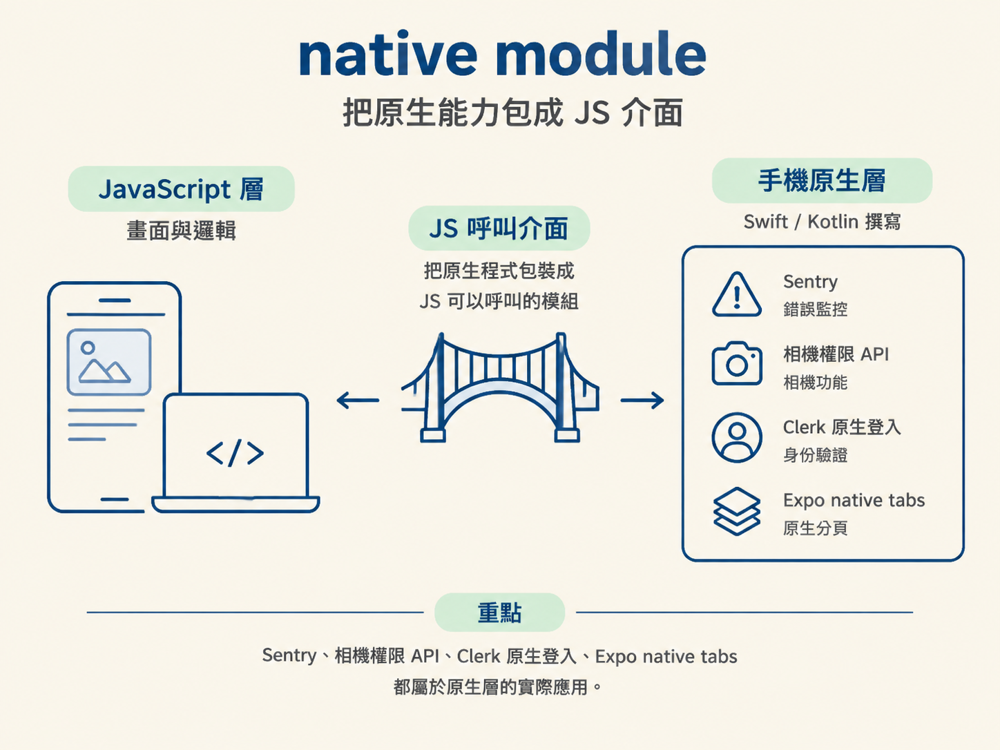
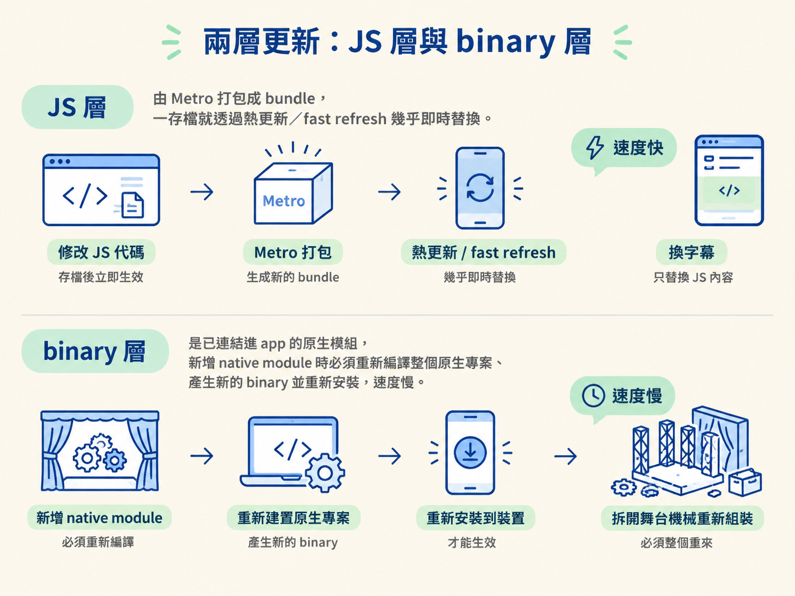
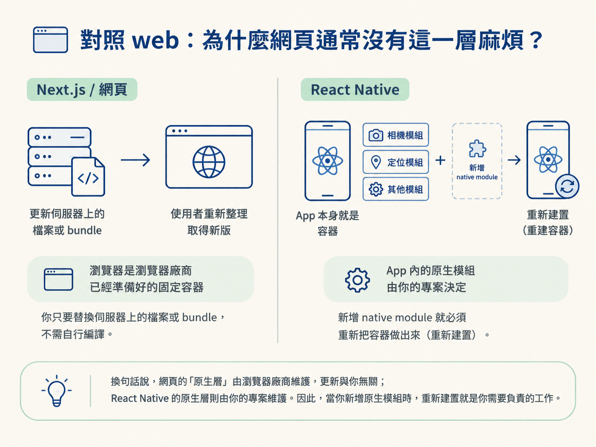

學完這一節，你會知道 native module 是什麼，理解為什麼新增 native module 後必須重新執行原生建置，也能分辨 Metro 的 JS 熱更新與原生重建，分別更新了 app 的哪一層。
你可能遇過這種情況：照著文件裝好套件，重新載入 app，畫面卻完全沒有變。終端機還吐出一段看不懂的錯誤。你問旁邊的人怎麼辦，得到的答案只有一句：「你要 rebuild。」
但問題是，明明只是多裝了一個套件，為什麼不能像平常改 JavaScript 一樣，重新整理就好？
關鍵是，React Native app 不只一層。它同時有 JavaScript 和原生程式碼，兩層的更新方式不一樣。搞懂「rebuild」背後的機制，你就能判斷哪些修改可以即時生效、哪些一定得重新建置，不用再靠猜。
先回到 JS 與手機原生能力之間的那條界線。
你可以在 JS 這一側撰寫畫面與邏輯，但手機有些能力位在另一側，例如相機、登入流程或系統層級的功能。要讓 JS 使用這些能力，就需要有人用原生語言撰寫程式：iOS 通常是 Swift，Android 通常是 Kotlin。接著，再把這段原生程式包成 JS 可以呼叫的介面。
這個「原生程式加上 JS 呼叫介面」的組合，就是 native module。
它其實比想像中常見。課程裡的 Sentry 是 native module，所以安裝後需要重建；相機權限那組 API 也是 native module。Clerk 的原生登入功能，以及 Expo 的 native tabs，同樣都站在原生這一側。

你在程式裡可能只看到一行 import 和幾個函式呼叫，但 app 背後其實多了一段原生碼。這段程式得先編譯、再連結進 app 的 binary，才能真的在手機上跑起來。
為什麼有些修改一存檔就出現，有些卻要等很久？因為 app 裡同時有兩層東西，更新方式就像兩種施工：一種只要換內容，另一種得拆開結構重新組裝。
| 層 | 裡面有什麼 | 怎麼更新 |
|---|---|---|
| JS 層 | 你寫的元件、state、畫面邏輯 | 由 Metro 打包成 JS bundle，改完後透過熱更新／fast refresh 幾乎即時套用 |
| Native／binary 層 | 已連結進 app 的原生模組、原生專案設定 | 重新編譯整個原生專案，產生新的 app binary |
Metro 是 Expo 生態裡負責打包 JavaScript 的工具。當你修改一個 .tsx 檔案，Metro 會重新打包 JS。手機上的 app 再透過 dev server 取得新的 bundle，畫面就更新了。
這個過程很快，是因為你只改了 JS 層，沒有碰到原生程式。
但新增 native module 就不一樣了。這個模組的原生碼得先編譯、再連結進 app binary。手機上原本裝好的 binary 裡，並沒有這段新程式。
JS 熱更新只能替換 JavaScript bundle，沒辦法順便把新的原生碼塞進既有的 app。所以你得重新建置，做出一個「已經包含新模組」的 binary，再重新安裝到裝置上。

記法：JS 熱更新換的是「字幕」，原生重建換的是「舞台上的機械」。字幕可以隨時替換；機械要停工施工，才能裝上新的零件。
把專案從 Expo Go 帶到 development build 時，會先安裝 dev client 套件：
npx expo install expo-dev-client
接著執行原生建置。以 iOS 為例，指令是：
npx expo run ios
Android 則使用對應的平台指令。建置完成後，專案會多出原生的 ios/ 資料夾；如果也建置 Android，則會有 android/ 資料夾。可以把它們想成 app 的原生外殼，裡面包含原生專案與要連結進 binary 的模組。
所以之後每次新增或移除 native module，都要再跑一次 npx expo run ios，讓新的 binary 編譯出來。
這也解釋了你常感受到的速度差異：第一次建置特別慢，因為它正在編譯原生專案；之後如果只改 JS，通常只需要更新 JS bundle，所以反應會快很多。
如果要把 build 裝到自己的實體手機，可以用 USB 連線執行 npx expo run iOS --device。也可以使用 Expo EAS 進行雲端建置，之後再讓手機上的 app 連回本機的 dev server。
那為什麼不每次修改都重建，省得判斷？因為原生重建本身很慢，而日常開發大多數時候只是在調整 JS。比較實際的節奏是：平常讓 Metro 負責熱更新；只有真的動到原生那一層，才付出一次重建的成本。
如果你熟悉 Next.js，可能會覺得 React Native 的重建流程特別陌生。原因是，在網頁世界裡，瀏覽器就是那個已經準備好的執行容器。
你不需要自己編譯瀏覽器，也不需要把新的原生模組裝進使用者的瀏覽器。只要替換伺服器上的檔案或 bundle，使用者重新整理後，就能取得新版程式。
React Native 的情況不一樣。它的 app 本身就是容器，而這個容器裡裝了哪些原生模組，是由你的專案決定的。容器裡的內容一改，例如多了一個 native module，就得重新把容器做出來。
換句話說，網頁的「原生層」由瀏覽器廠商維護，更新與你無關；React Native 的原生層則由你的專案維護。所以當你新增原生模組，重新建置就是你要自己負責的事。

native module 是用原生語言寫好、再包成 JS 介面的模組。你的 app 同時有 JS 層與 native／binary 層：JS 層由 Metro 打成 bundle，可以透過熱更新快速替換；native／binary 層則包含已連結的原生模組。只要新增或移除 native module，就得用
npx expo run ios重新編譯並重新安裝。
第一次建置比較慢、之後只改 JS 卻很快，是因為這兩層的更新成本本來就不一樣，不是 Expo 故意找麻煩。
到這裡，心智模型的三塊拼圖已經接上：渲染終點換了、Expo 提供整條工具鏈，而 native module 決定你什麼時候必須重建。最後一節會把這些觀念放進真實專案的檔案裡，打開 Codexgram 的 _layout.tsx，看看它們在程式碼中實際長什麼樣子。